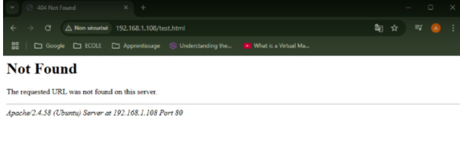

Nous prenons connaissance de l’adresse ip de la machine : 192.168.1 correspond à l’adresse du réseau tandis que 108 correspond à l’adresse de la machine virtuelle.
Installer un serveur ssh si ce n’est pas déjà fait, “sudo apt install openssh-serve:” permet d’installer le service de ssh. Et entrer “O” ensuite pour continuer.
(optionnel -> facilite les manips)

On installe apache puis on entre “O” pour oui. Une fois l’installation terminée, le service web sera démarré dès la fin de l’installation.

Vous pourrez ensuite vérifier le bon fonctionnement de votre service web en tapant l’adresse ip de votre machine dans un navigateur.
On peut ainsi voir l’emplacement du fichier html. Sur le site, il est indiqué que le fichier est contenu dans le dossier var/www par défaut, il s’agit donc d’un fichier public. D’après la commande ls, le fichier est bien dans le dossier var.
On peut taper la commande “more /var/www/html/index.html” pour voir le contenu du fichier index.html.
Avec ls -l, on constate que l’on n’a pas les droits d’écriture et de modifications sur le fichier index.html, on souhaite régler ce problème.
On crée un dossier monsite.fr dont l’on peut constater la création via la commande ll. (Ici, nous pouvons voir qu’elle affiche une erreur au niveau de la création du répertoire. Cela se produit car nous avons déjà créé au préalable le répertoire mais sinon le répertoire est censé se créer sans problème.)

On se place dans le répertoire courant (monsite.fr). Puis on crée un fichier test.html dans lequel on écrit “Hello world ! “. Cette manipulation permet de savoir si nous avons bien les droits d’écriture.
Le but va être d’avoir un affichage fonctionnel sur la page test.html (qui n’est pas le cas pour l’instant).
On peut voir que l’on retrouve le fichier 000-default.conf dans un lien en tapant la commande ls -l. On modifie le fichier 000-default.conf avec sudo vi :

Il faut entrer le mot de passe pour y accéder.